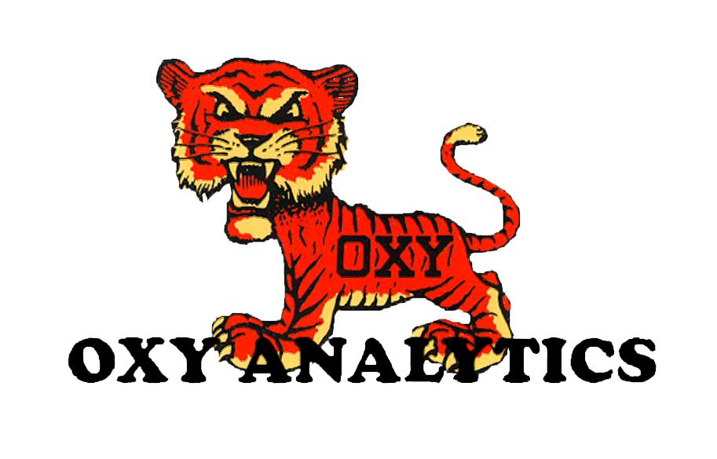

Close
Welcome to Oxy Analytics
A performance evaluation site for the Occidental College Soccer program.
Site Navigation (via 'Analytics' tab):
-Data Pages:
Team Breakdown page: numerical seasonal data display
Player Selection page: team roster to access seasonal performance
-Analytics Pages
Seasonal Analysis page: display of team's seasonal statistics
per Game Analysis page: display of team's perGame statistics
-Reference Material
Performance Metric Index page: user guide for the site's performance metrics.
Analytics Explained page: explaining the site's statistical analysis methods
External Reference page: online analytics reference material.
Oxy Analytics
Occidental College's student-run sports analysis service
Home
Analytics
Analytics Menu
Data Selection
Team
Player Selection
Analysis Selection
Seasonal Analysis
per Game Analysis
Visual Analysis
Reference Material
Analytics Explained
Performance Metric Index
External Resources
About
